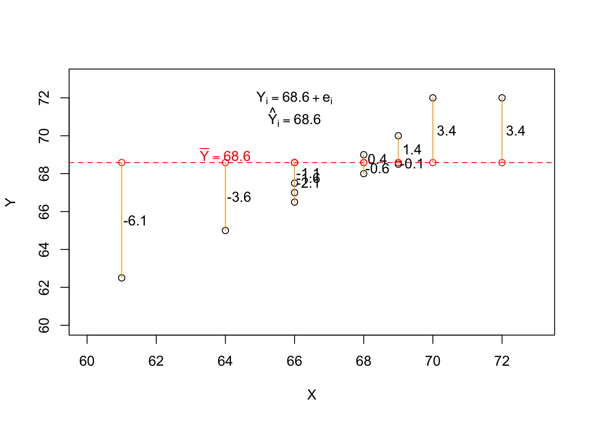

#install.packages("NHANES)
library(NHANES)
library(effectsize)
data(NHANES)3 Simple Regression Models
Next we will look at the variables available in the NHANES dataframe, which is a available in the NHANES package in R. To illustrate how we can make statistical inferences, we can assume we want to know if adult height differs between women and men. Admittedly, this is a ver trivial goal of research, but it will help us to review the topic of statistical inference. To do this we will consider three scenarios. First, we will pretend that we have no idea about what to expect between variables in this data and are engaging in an exploratory study which includes looking for relations between height and gender. Second, we will pretend that we suspect that there is a relation between height and gender, possibly among other relations, and we want to know if heights are different between the populations of adult women and men. This is a rough confirmatory study. Third, we will pretend that a primary goal of our study is to test the hypothesis that men are taller than women. We have a compelling theoretical model that suggest this relation, and we decide to test this hypothesis before we collect or at least before we look at our data. This is a strict confirmatory study.
names(NHANES) [1] "ID" "SurveyYr" "Gender" "Age"
[5] "AgeDecade" "AgeMonths" "Race1" "Race3"
[9] "Education" "MaritalStatus" "HHIncome" "HHIncomeMid"
[13] "Poverty" "HomeRooms" "HomeOwn" "Work"
[17] "Weight" "Length" "HeadCirc" "Height"
[21] "BMI" "BMICatUnder20yrs" "BMI_WHO" "Pulse"
[25] "BPSysAve" "BPDiaAve" "BPSys1" "BPDia1"
[29] "BPSys2" "BPDia2" "BPSys3" "BPDia3"
[33] "Testosterone" "DirectChol" "TotChol" "UrineVol1"
[37] "UrineFlow1" "UrineVol2" "UrineFlow2" "Diabetes"
[41] "DiabetesAge" "HealthGen" "DaysPhysHlthBad" "DaysMentHlthBad"
[45] "LittleInterest" "Depressed" "nPregnancies" "nBabies"
[49] "Age1stBaby" "SleepHrsNight" "SleepTrouble" "PhysActive"
[53] "PhysActiveDays" "TVHrsDay" "CompHrsDay" "TVHrsDayChild"
[57] "CompHrsDayChild" "Alcohol12PlusYr" "AlcoholDay" "AlcoholYear"
[61] "SmokeNow" "Smoke100" "Smoke100n" "SmokeAge"
[65] "Marijuana" "AgeFirstMarij" "RegularMarij" "AgeRegMarij"
[69] "HardDrugs" "SexEver" "SexAge" "SexNumPartnLife"
[73] "SexNumPartYear" "SameSex" "SexOrientation" "PregnantNow" The names are helpful, but we will want to know more about each variable. Because this is a data set from an R package, you can learn more about it using R’s help system as follows:
?NHANESYou should run the above command in RStudio and take a few minutes to read through the resulting help file, which will give you an idea of what is contained in the data, an what each variables captures.
One thing you might have noticed reading through the data description is that height was measured in centimeters (cm). Below I create a variable I call Height_in that converts from centimeters to inches.
NHANES$Height_in <- NHANES$Height/2.54Let’s look at the distribution of heights using this real data.
hist(NHANES$Height_in, breaks = "fd")
The data do not look normally distributed. instead, there is a long tail on the left side of the distribution. What do you think is going on here? You may want to read back over the data description. To understand this, take a look at the distribution of the age variable.
hist(NHANES$Age)
The data contain information on people from birth well into adulthood. Maybe the long left tail of the height distibution is a result of this age distribution. To explore this we can plot height against age.
plot(Height_in ~ Age, NHANES)
This plot seems consistent with our hunch. From birth to the late teens we see a relation between height and age. For participants older than 18 or so, we don’t see a relation between height and age. Because we are interested in the height of adults we subset the data to only include those of the age of 18.
nhanesAdult <- NHANES[NHANES$Age >= 18, ]plot(Height_in ~ Age, nhanesAdult)
We can now look at the distribution of heights among adults.
hist(nhanesAdult$Height_in)
This looks more normally distributed, which is what we would expect from a random sample of adults.
We might expect there to be differences in the average heights between males and females. To explore this we can use a boxplot.
boxplot(Height_in ~ Gender, nhanesAdult)
We do see that the median height of males is greater than that of females. The following code gives us the sample means for each gender category.
aggregate(Height_in ~ Gender, data = NHANES, FUN = mean) Gender Height_in
1 female 61.65979
2 male 65.82336To review what we learned about statistical inference first we will consider our three scenarios.
3.0.1 Exploratory Study
Recall that if we have no idea about what to expect between variables in this data then we are engaging in an exploratory study which includes looking for relations between height and gender.
The appropriate comparisons to make are graphics, means, confidence intervals, and effect sizes of the two group’s heights (Fife and Rodgers 2022).
ht.gender_model <- lm(Height_in ~ Gender, data =nhanesAdult)
boxplot(Height_in ~ Gender, data = nhanesAdult)
summary(ht.gender_model)
Call:
lm(formula = Height_in ~ Gender, data = nhanesAdult)
Residuals:
Min 1Q Median 3Q Max
-10.8489 -1.9176 -0.0221 1.9070 9.6572
Coefficients:
Estimate Std. Error t value Pr(>|t|)
(Intercept) 63.80166 0.04733 1348.00 <2e-16 ***
Gendermale 5.43876 0.06743 80.66 <2e-16 ***
---
Signif. codes: 0 '***' 0.001 '**' 0.01 '*' 0.05 '.' 0.1 ' ' 1
Residual standard error: 2.905 on 7422 degrees of freedom
(57 observations deleted due to missingness)
Multiple R-squared: 0.4671, Adjusted R-squared: 0.467
F-statistic: 6506 on 1 and 7422 DF, p-value: < 2.2e-16confint(ht.gender_model) 2.5 % 97.5 %
(Intercept) 63.708878 63.894440
Gendermale 5.306584 5.570939cohens_d(Height_in ~ Gender, data =nhanesAdult)Warning: Missing values detected. NAs dropped.Cohen's d | 95% CI
--------------------------
-1.87 | [-1.93, -1.82]
- Estimated using pooled SD.It is very important to note that a probabilistic interpretation is NOT appropriate for the p values. The p-value of less than .001 for the gender coefficient in the linear model output, should not be used as evidence against the null hypothesis. It would also be very important to report all the tests and comparisons conducted to be transparent about what was done in the study.
You should also explore the residuals of the model. We will talk about more sophisticated ways to explore residuals later, for now. Such studies should be followed collecting new data to use one of the other types of studies described below.
hist(resid(ht.gender_model))
3.0.2 Rough Confirmatory Study
If originally we suspected that there is a relation between height and gender, possibly among other relations of interest, and we want to know if heights are different between the populations of adult women and men, this study could be considered a rough confirmatory study.
In that situation it would also be appropriate to use graphs, means, and effect sizes, along with confidence intervals. All of the output we obtained above could be used. The difference is that you may emphasize the confidence intervals of the linear model coefficients
confint(ht.gender_model) 2.5 % 97.5 %
(Intercept) 63.708878 63.894440
Gendermale 5.306584 5.570939Such studies should be followed by strict confirmatory studies if there is support for any of the hypotheses. All analyses and exploratory techniques should be reported transparently.
3.0.3 Strict Confirmatory Study
This study requires that specific hypotheses related to theory are posited before the data are collected. Then those, and only those hypotheses should be tested and interpreted in the manner that follows. Any additional analyses should be labeled as exploratory and interpreted as in the exploratory study section above. This includes adding any sub-group analyses. If you just happen to find another predictor, say a variable you entered as a covariate to reduce model error, that happens to have a small p-value, it is not appropriate to interpret that as evidence against a null hypothesis, because you did not posit that hypothesis. Such an error is known as HARKing, which stands for Hypothesizing After the Results are Known. It’s bad. Really bad.
summary(ht.gender_model)
Call:
lm(formula = Height_in ~ Gender, data = nhanesAdult)
Residuals:
Min 1Q Median 3Q Max
-10.8489 -1.9176 -0.0221 1.9070 9.6572
Coefficients:
Estimate Std. Error t value Pr(>|t|)
(Intercept) 63.80166 0.04733 1348.00 <2e-16 ***
Gendermale 5.43876 0.06743 80.66 <2e-16 ***
---
Signif. codes: 0 '***' 0.001 '**' 0.01 '*' 0.05 '.' 0.1 ' ' 1
Residual standard error: 2.905 on 7422 degrees of freedom
(57 observations deleted due to missingness)
Multiple R-squared: 0.4671, Adjusted R-squared: 0.467
F-statistic: 6506 on 1 and 7422 DF, p-value: < 2.2e-16